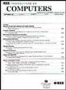
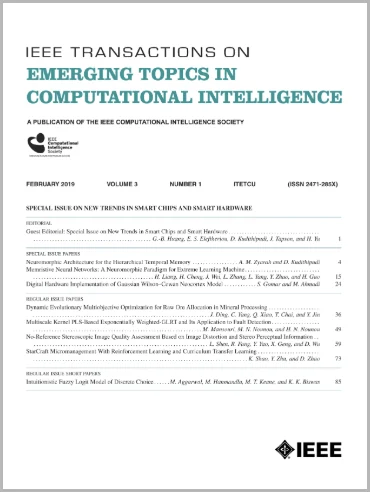
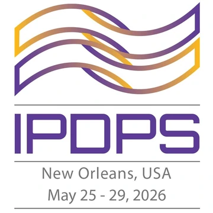
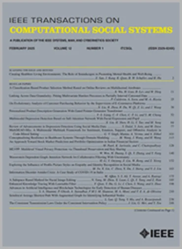
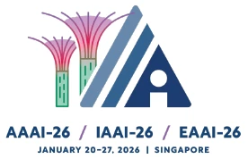

-

AgentServe published in IEEE Transactions on Computers
AgentServe gives prompt processing and token generation separate GPU resources. It helps multiple language-model agents share a consumer GPU while keeping token delivery responsive.
-

FedFAF published in IEEE Transactions on Emerging Topics in Computational Intelligence
FedFAF aligns features across healthcare institutions and uses Fisher information to reduce the impact of differential privacy noise during training.
-
Blockchain risk monitoring study in Electronic Commerce Research
The paper develops a value-at-risk framework for monitoring systemic risk in cryptocurrency markets.
-

–MosaicUFL at IEEE IPDPS 2026
MosaicUFL selects participating devices for federated training when their local data is unlabelled.
-
–
Distributed self-supervised learning study at ICLR 2026
The study compares masked image modelling and contrastive learning when clients hold different kinds of data. It examines how the choice of training objective and network connectivity affects robustness.
-
Periodic job scheduling study published in the Journal of Parallel and Distributed Computing
The paper studies how to schedule recurring jobs across two machines when each job can run at one of several processing times. It identifies properties that reduce the search for an optimal schedule.
-
DeNAV published in Machine Learning
DeNAV routes models directly between devices for self-supervised training, keeping unlabelled data local and accounting for the age of each model update.
-
FixGen featured in the March issue of IEEE Transactions on Computers
FixGen manages model memory and batches work so interactive and offline language-model requests can share one GPU.
-

FedSCOPE featured in the February issue of IEEE Transactions on Computational Social Systems
FedSCOPE evaluates federated learning systems across five dimensions, covering learning performance, reliability, fairness, robustness and privacy.
-

Federated learning scaling laws at AAAI-26
The study examines how the number of participating clients and the data available to each client affect the choice of model size in federated learning.
-
Look-back horizons for federated forecasting at AAAI-26
This work proposes a way to choose how much past data to use when training a forecasting model across clients with different time series.
-
GPU scheduling study featured in the January issue of IEEE TPDS
The scheduler adjusts GPU capacity and request batch sizes together as workloads change, allowing multiple tenants to share one GPU.
Research keywords
- Edge AI
- Mobile devices
- Unlabelled data
- mmWave radar
- Federated learning
- GPU scheduling
- Wireless sensing
- Synthetic data
- Digital twins
- Visual localisation
- Model serving
- Self-supervision
- Distributed AI
- Multi-tenant AI
- Model caching
- Parallel inference
- Efficient inference
- Edge computing
- Decentralised ML
- Local training